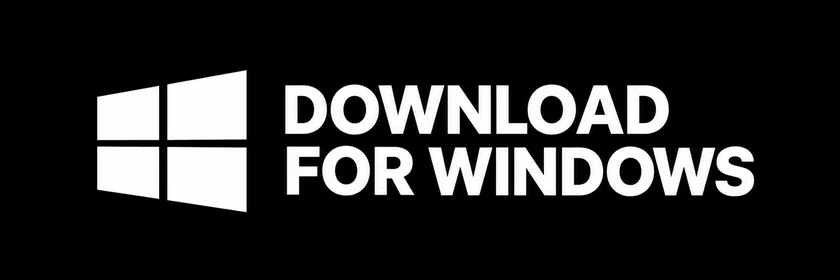
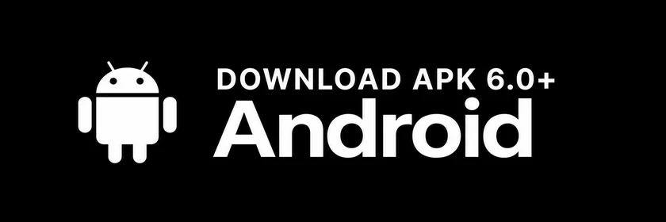
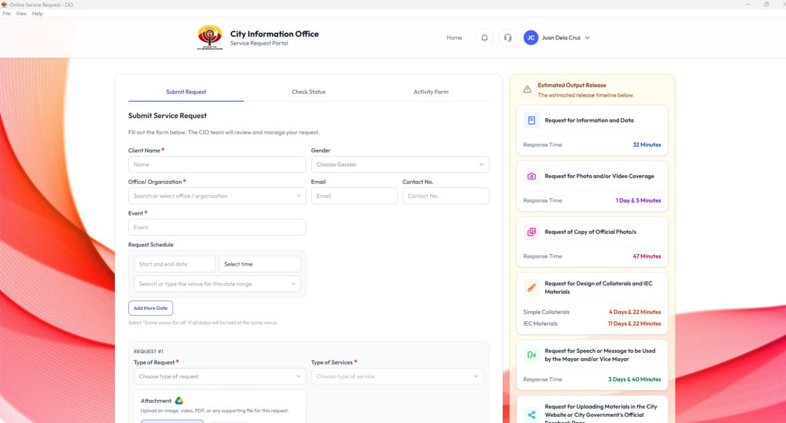
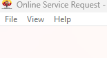
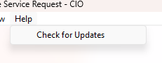

OUR NEW ONLINE HOME
Online Service Request
New Portal URL
Please use our new website for your service requests.
Go to the new portal →
Save the new address to your bookmarks for your next visit.
The new portal address will be available here soon.
INSTALL THE APP
Get Online Service Request
Choose the installer for your device, or continue using the new portal in your browser.
Windows desktop
Recommended for office use
Version 0.1.7 · Windows 64-bit
- Install Microsoft Edge WebView2
If WebView2 is already installed, you can skip this step.
Download WebView2 runtime ↓
- Install the desktop app
Download the installer below, then open it to install Online Service Request.

Windows installer (.exe)
Android mobile
Android only
Version 0.1.4 · APK installer
Access Online Service Request from your Android phone or tablet.
- Download the APK
Tap the button below to save the Android installer.
- Open the downloaded file
Follow your device’s prompts to install the app.

Android installer (.apk) · Not available for iPhone or iPad
Already have the desktop app? Follow the update guide below.
FOR DESKTOP APP USERS
Update your desktop app
Desktop app
Follow these steps to get the latest version of the Online Service Request desktop app.

The Help menu is in the top-left corner of the app window.
-
1
Open the Help menu
In your desktop app, click Help in the top menu.

-
2
Select “Check for Updates”
Follow the on-screen instructions to complete the update.

Using a phone or tablet?
You can access the new portal in your browser using the link above. The Help menu instructions apply to the desktop app.